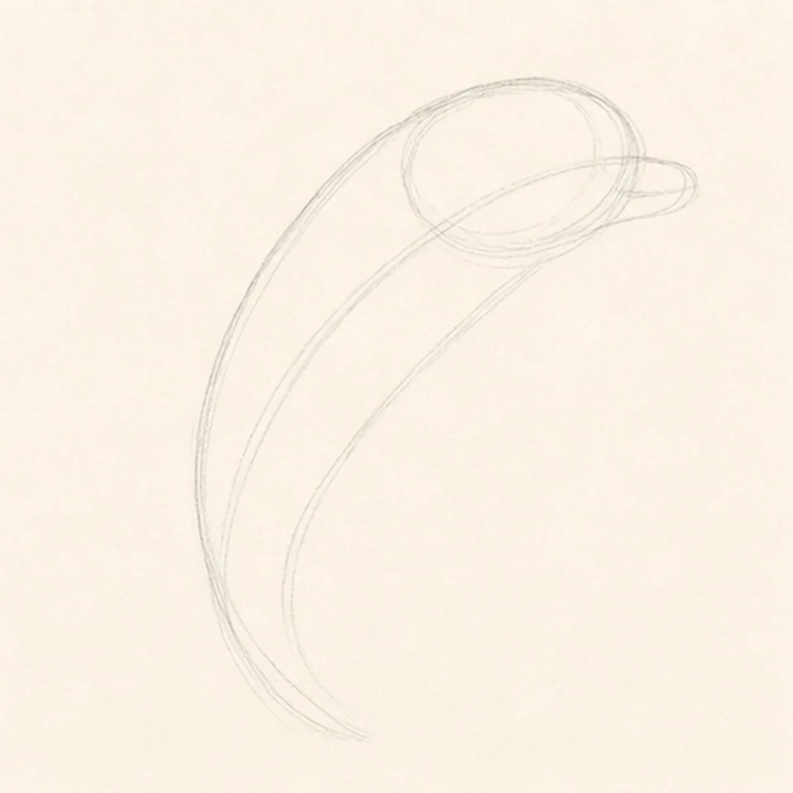
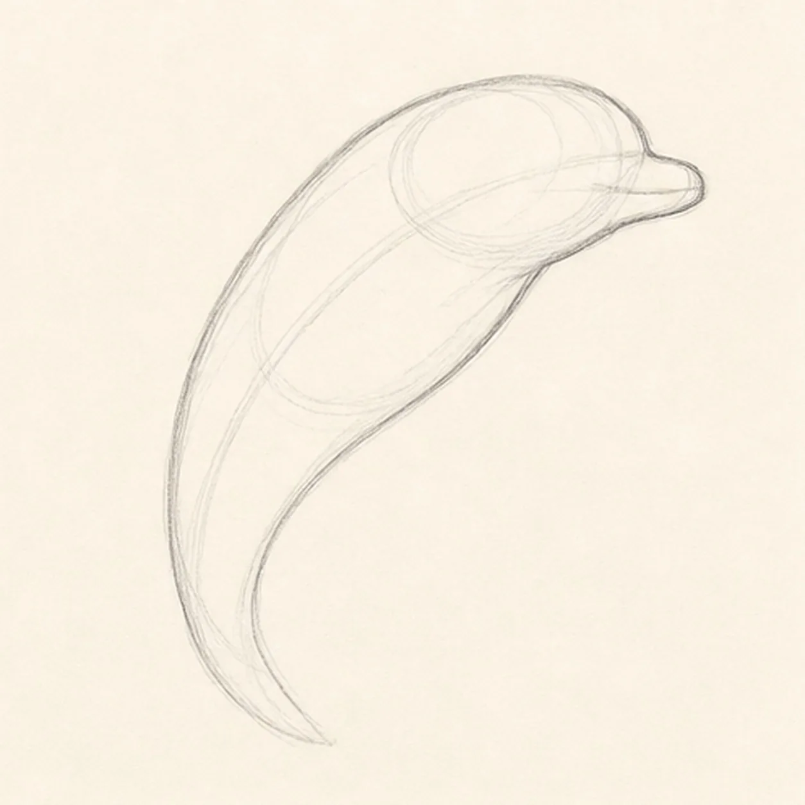
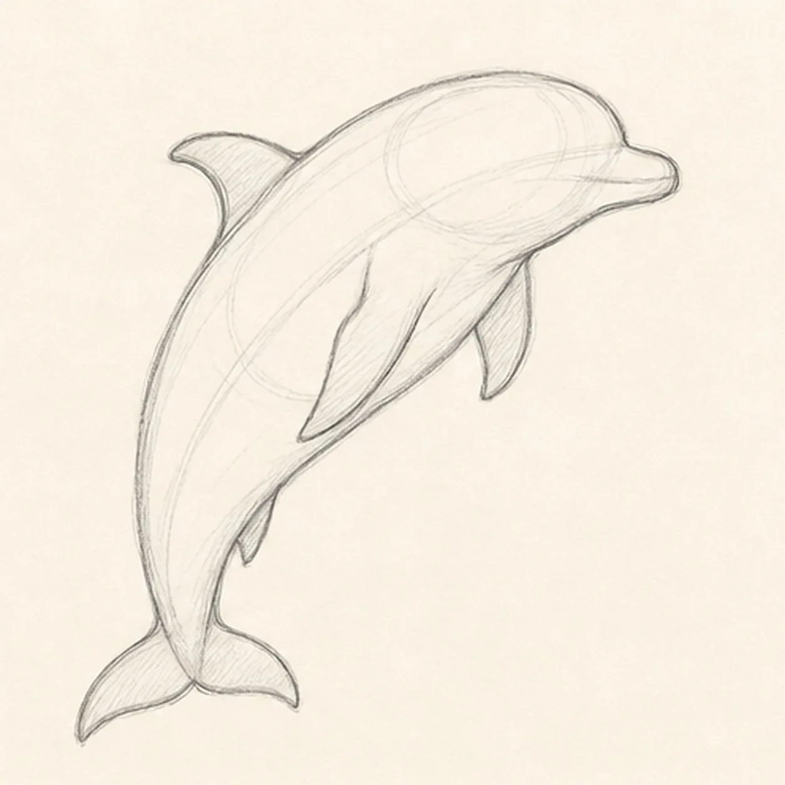
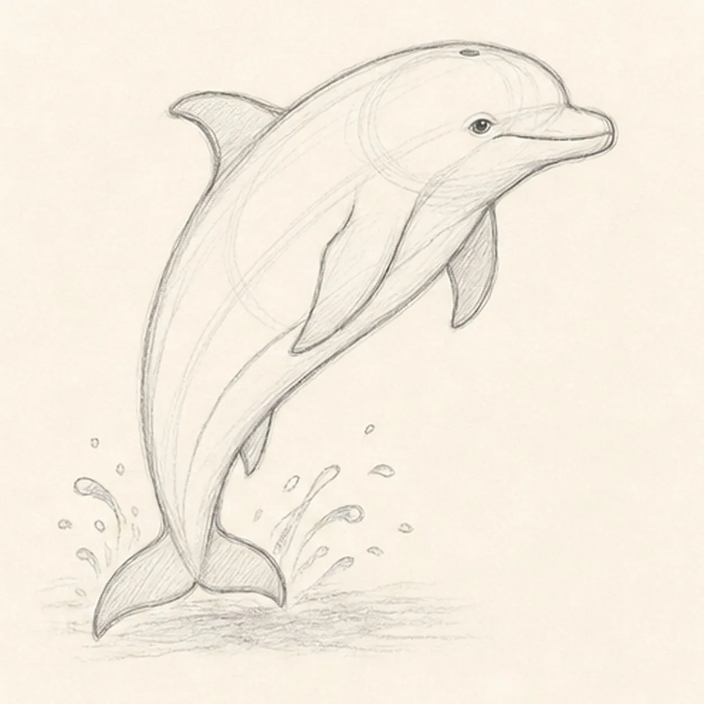
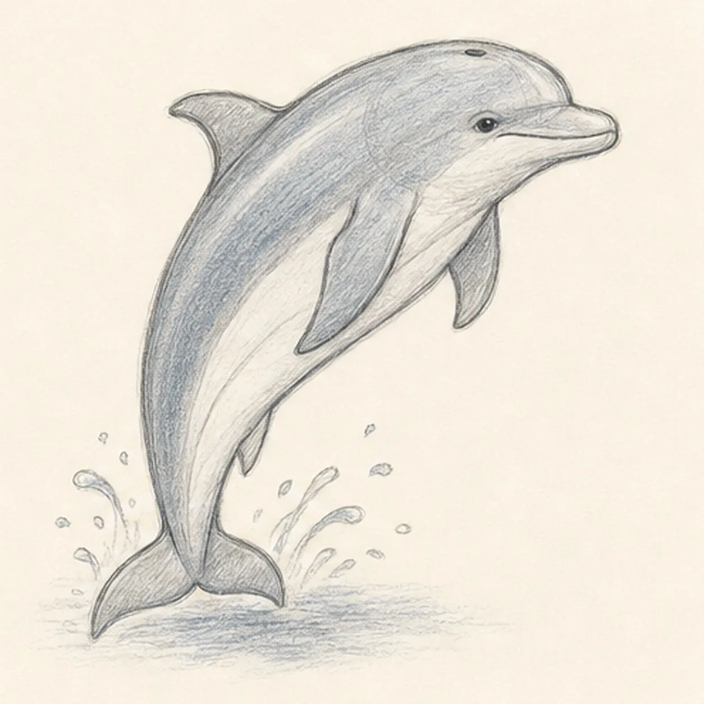

From the archive
Let's draw a leaping bottlenose dolphin
Treat this as one small practice round: build the subject lightly, notice the shapes, then darken only the lines that help the finished sketch.
-
01

Sweep the dolphin gesture
Draw one light rising C-curve, place overlapping head and torso masses along it, then add a short beak guide, belly axis, and tapering tail axis.
Sketch tip: Ghost the full arc two or three times before touching down. A single relaxed sweep is easier to build on than several unrelated body ovals.
-
02

Shape the leaping body
Wrap the guides with a rounded forehead, short beak, arched back, pale belly edge, and tapered tail stock.
Sketch tip: Rotate the page for the long back and belly curves. Compare the empty wedge between them near the tail so the body narrows smoothly instead of pinching suddenly.
-
03

Add fins and flukes
Attach the curved dorsal fin, one full near flipper, the visible part of the far flipper, and two paired tail flukes to the established body.
Sketch tip: Aim every fin away from the same body centerline. Draw only the far flipper edge you can actually see rather than finishing anatomy hidden behind the belly.
-
04

Place the dolphin landmarks
Add the small eye, gentle mouth line, blowhole, belly division, and a few water-splash arcs beneath the leap.
Sketch tip: Use the beak base to align the eye and mouth, then keep the blowhole on the crown center. Feel free to vary the splash rhythm while leaving the dolphin pose unchanged.
-
05

Shade the ocean colors
Add restrained blue-gray pencil to the established back and fins, keep the belly pale, then place soft graphite depth and a watery shadow below.
Sketch tip: Pull the color strokes along the dolphin's arc and leave narrow paper highlights on the forehead and back. Two light passes preserve more life than one heavy fill.
-
06

Finish the dolphin sketch
Strengthen the keeper contours and clarify the established facial landmarks, fin overlaps, restrained color, splash, and watery shadow.
Sketch tip: Squint once to check that the rising body reads before the details. Stop before adding fish, waves, a horizon, or a second dolphin—the single leap already carries the drawing.